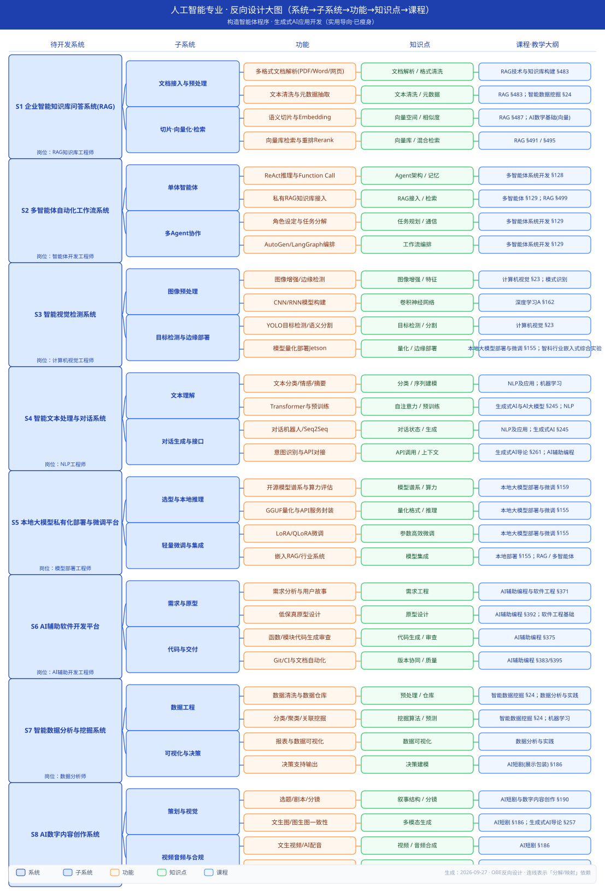
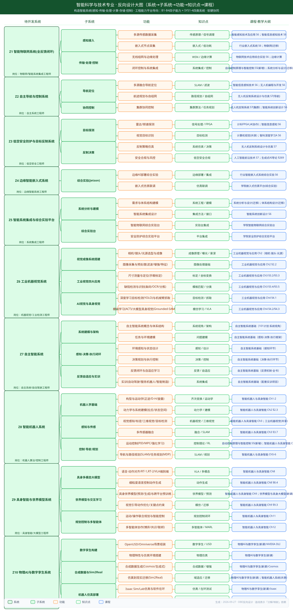
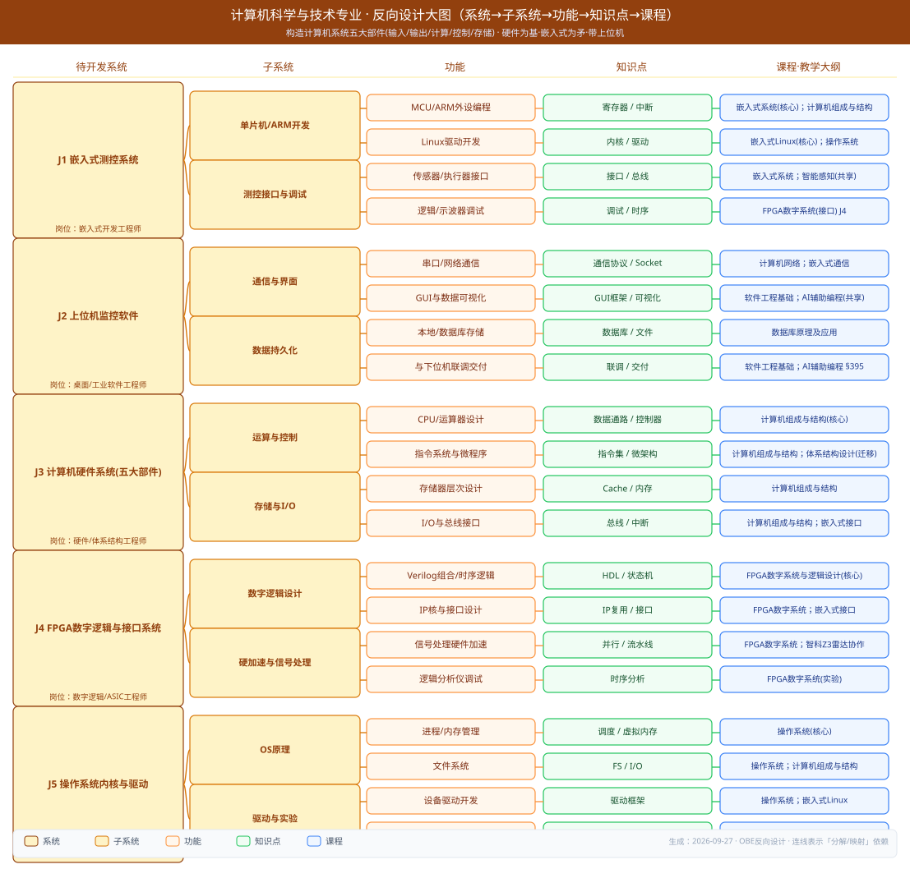
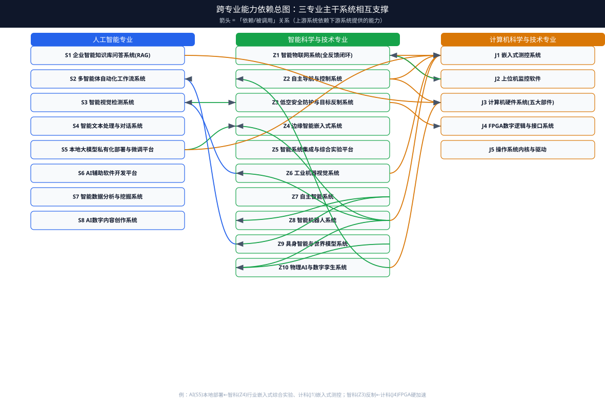

设计方法：先定「能开发的系统」→ 拆子系统 → 功能 → 知识点 → 教学大纲（课程·章节）。每专业一张分层依赖图（连线表示「分解/映射」依赖）；末图为跨专业能力依赖总图（箭头表示相互支撑）。AI 专业已按彭老师意见瘦身（去掉最优化等偏难课，换实用课）。
构造智能体程序 · 生成式AI应用开发（实用导向·已瘦身）

构造智能系统(感知-传输-处理-计算-存储-控制) · 工程能力平台导向：B1-B4四子能力 × SYS1-4四类系统 · 软硬协同

构造计算机系统五大部件(输入/输出/计算/控制/存储) · 硬件为基·嵌入式为矛·带上位机

三专业主干系统并非孤立：计科提供硬件/嵌入式/上位机底座，智科提供系统级集成与行业特色，AI 提供算法模型与生成式应用；三者通过边缘部署、视觉检测、雷达信号处理等形成能力闭环。
